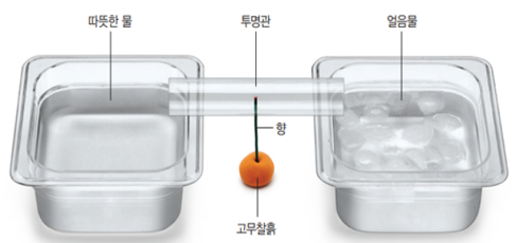

1번
다음은 따뜻한 물과 얼음물이 든 그릇 사이에 향불을 놓고 향 연기의 움직임을 관찰하는 실험입니다. 향 연기의 움직임으로 알 수 있는 자연 현상은 무엇인지 쓰세요.
[실험 과정]
- (가) 투명 관을 둥글게 말아 셀로판테이프로 고정합니다.
- (나) 따뜻한 물을 담은 그릇과 얼음물을 담은 그릇의 간격을 8cm 정도 띄우고 5분
정도 기다립니다.
- (다) 고무찰흙에 향을 꽂은 다음, 두 그릇 사이에 놓습니다.
- (라) 향에 불을 붙이고, 투명 관의 구멍에 향이 들어가도록 투명 관을 그릇 사이에
올립니다.
